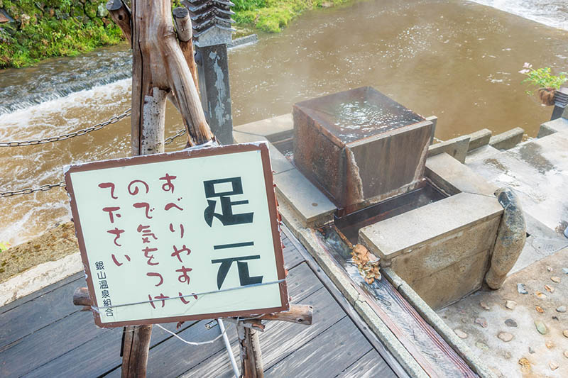

銀山溫泉
Ginzan Onsen\Yinshan Hot Spring
銀山溫泉介紹
銀山溫泉是位於日本東北地方山形縣山間地區的溫泉地。這條群山包圍之中的小街，17世紀時曾作為白銀礦場而繁榮一時，也便是因此而得到了銀山溫泉一名。復古街景下的銀白冬日雪景充滿浪漫氛圍，吸引了眾多來訪的人們。 銀山溫泉也是風靡全世界約70國以上的人氣電視劇『阿信』的舞臺。另外，也像極了描繪並立在街邊的溫泉旅館風情的吉卜力電影『神隱少女』中的湯屋的氛圍！堪稱影迷們不容錯過的溫泉聖地。
銀山溫泉活動推薦
穿著大正和服遊溫泉老街
在溫泉街中心流淌的銀山河沿岸，古老的旅館鱗次櫛比，100多年以前的景觀傳承至今。夜間煤氣燈為這壹切披上橘色的燈光，營造出非常浪漫的氛圍，非常適合悠閑地漫步街頭。 對於建於1920年代的旅館鱗次櫛比的銀山溫泉來說，整條街都很上鏡！ 要說當時年輕女性的經典服裝的話，那便是大正時期風行的袴（和服裙褲）。租衣店準備了圖案鮮艷、種類豐富的袴。 男性服裝也有，店員還能幫助您整齊地穿上，不必擔心。
溫泉泡湯設施、足浴
 由於銀山溫泉不分國內外的超高人氣，在旺季時旅館常常一房難求。不過即使沒有訂到溫泉街上的旅館，依然可以在銀山溫泉享受泡湯之樂！在溫泉街上就有能夠免費泡湯並且一覽銀山溫泉景色的「和樂足湯」，除此之外還有由日本知名建築師「隈研吾」一手打造的公共浴池「白金湯」（しろがね湯），以及位於溫泉街深處，一次能夠租借50分鐘的私人湯屋「面影湯」（おもかげ湯）。
將舞者手勢與觀者融為一體的清新「花笠舞」
以雪景大受歡迎的銀山溫泉，在新綠綻現的美麗夏天也風情萬種。每年5月中旬以後，開放沿著銀山河的規劃好的散步小道。 另外，夏天還是銀山溫泉所在的尾花澤市一帶的西瓜收獲時期。這種在寒暖溫差較大的東北盆地收獲的西瓜甜美多汁，絕對值得一試。 手拿裝飾了鮮花的斗笠跳舞的花笠舞，是山形縣的傳統藝術表演。5月〜10月每周六晚，在橫跨銀山河的橋上能觀賞得到這種花笠舞。 在這充滿氣勢地揮舞斗笠、動感十足的舞蹈表演下，觀眾熟練地手打著節拍應和“Yattsusyoomakasyo!”的口號，想必會留下深刻印象。
溫泉街的必吃美食
手打蕎麥麵的「伊豆之華」。這是一家將140多年以前的古民居改造再利用的食堂。
人氣菜色是「油炸茄子蘿蔔泥蕎麥」(不含稅1,200日圓)無論冷著吃還是熱著吃，都令人食指大動。
咖啡店「Haikarasan通り」的知名商品「Haikarasan的咖哩麵包」(含稅價230日圓)。
使用日本國產小麥製作，剛出爐的咖哩麵包，質地酥軟並夾入了大量辛辣的咖哩餡料，好吃到每到傍晚就會完售，堪稱熱門商品。